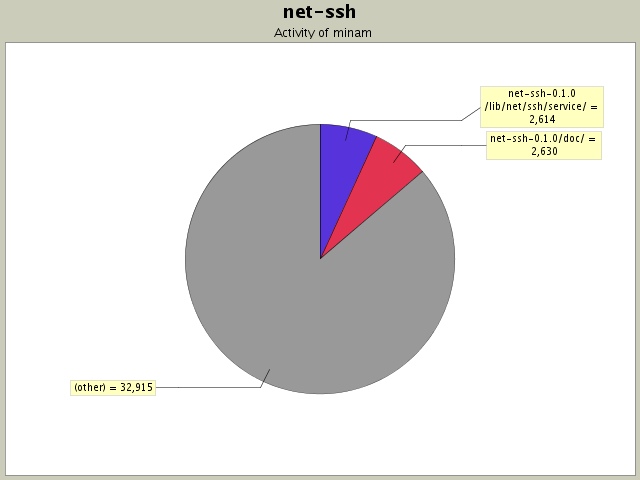
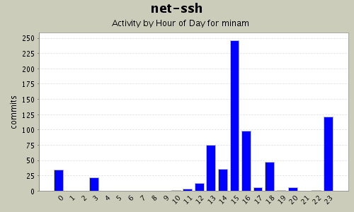
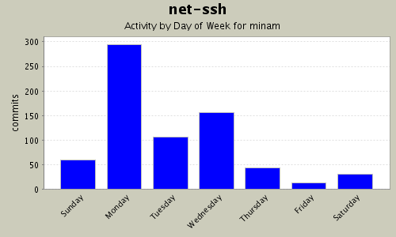

Summary Period: 2004-06-20 to 2005-01-07
708 (100.0%)
38159 (100.0%)

| Directory | Changes | Lines of Code | Lines per Change |
|---|---|---|---|
| Totals | 708 (100.0%) | 38159 (100.0%) | 53.8 |
| net-ssh-0.1.0/doc/ | 27 (3.8%) | 2630 (6.9%) | 97.4 |
| net-ssh-0.1.0/lib/net/ssh/service/ | 48 (6.8%) | 2614 (6.9%) | 54.4 |
| net-ssh/ | 24 (3.4%) | 1672 (4.4%) | 69.6 |
| net-sftp/ | 11 (1.6%) | 1596 (4.2%) | 145.0 |
| net-ssh-0.1.0/ | 40 (5.6%) | 1571 (4.1%) | 39.2 |
| net-ssh-0.1.0/lib/net/ssh/sftp/ | 22 (3.1%) | 1547 (4.1%) | 70.3 |
| net-ssh-0.1.0/lib/net/ssh/transport/ | 46 (6.5%) | 1408 (3.7%) | 30.6 |
| net-ssh/lib/net/ssh/transport/ | 8 (1.1%) | 1166 (3.1%) | 145.7 |
| net-ssh/lib/net/ssh/userauth/ | 9 (1.3%) | 1022 (2.7%) | 113.5 |
| net-ssh/lib/net/ssh/connection/ | 6 (0.8%) | 964 (2.5%) | 160.6 |
| net-sftp/test/operations/ | 16 (2.3%) | 926 (2.4%) | 57.8 |
| net-ssh/test/transport/ | 6 (0.8%) | 883 (2.3%) | 147.1 |
| net-sftp/lib/net/sftp/operations/ | 20 (2.8%) | 856 (2.2%) | 42.8 |
| net-ssh-0.1.0/examples/ | 24 (3.4%) | 809 (2.1%) | 33.7 |
| net-ssh/test/userauth/ | 4 (0.6%) | 759 (2.0%) | 189.7 |
| net-ssh/doc/manual/ | 9 (1.3%) | 682 (1.8%) | 75.7 |
| net-ssh-0.1.0/test/ | 7 (1.0%) | 630 (1.7%) | 90.0 |
| net-ssh/lib/net/ssh/transport/ossl/ | 8 (1.1%) | 625 (1.6%) | 78.1 |
| net-ssh/doc/manual/parts/ | 30 (4.2%) | 623 (1.6%) | 20.7 |
| net-ssh/lib/net/ssh/service/process/ | 4 (0.6%) | 572 (1.5%) | 143.0 |
| net-ssh/test/proxy/ | 3 (0.4%) | 571 (1.5%) | 190.3 |
| net-ssh/test/transport/ossl/ | 6 (0.8%) | 558 (1.5%) | 93.0 |
| net-ssh/lib/net/ssh/service/forward/ | 4 (0.6%) | 550 (1.4%) | 137.5 |
| net-ssh/test/service/process/ | 4 (0.6%) | 539 (1.4%) | 134.7 |
| net-sftp/lib/net/sftp/protocol/01/ | 4 (0.6%) | 526 (1.4%) | 131.5 |
| net-ssh/test/service/forward/ | 3 (0.4%) | 520 (1.4%) | 173.3 |
| net-sftp/test/protocol/01/ | 3 (0.4%) | 513 (1.3%) | 171.0 |
| net-ssh/test/connection/ | 3 (0.4%) | 508 (1.3%) | 169.3 |
| net-ssh/lib/net/ssh/util/ | 4 (0.6%) | 494 (1.3%) | 123.5 |
| net-ssh/examples/ | 7 (1.0%) | 478 (1.3%) | 68.2 |
| net-sftp/lib/net/sftp/protocol/04/ | 4 (0.6%) | 456 (1.2%) | 114.0 |
| net-sftp/lib/net/sftp/protocol/ | 4 (0.6%) | 431 (1.1%) | 107.7 |
| net-ssh-0.1.0/lib/net/ssh/proxy/ | 6 (0.8%) | 421 (1.1%) | 70.1 |
| net-ssh/lib/net/ssh/proxy/ | 4 (0.6%) | 403 (1.1%) | 100.7 |
| net-ssh/lib/net/ssh/transport/kex/ | 3 (0.4%) | 397 (1.0%) | 132.3 |
| net-ssh/test/userauth/methods/ | 3 (0.4%) | 392 (1.0%) | 130.6 |
| net-ssh/lib/net/ssh/userauth/methods/ | 4 (0.6%) | 389 (1.0%) | 97.2 |
| net-ssh/test/transport/kex/ | 2 (0.3%) | 374 (1.0%) | 187.0 |
| net-ssh/lib/net/ssh/transport/compress/ | 7 (1.0%) | 364 (1.0%) | 52.0 |
| net-ssh/doc/ | 5 (0.7%) | 363 (1.0%) | 72.6 |
| net-sftp/doc/ | 5 (0.7%) | 363 (1.0%) | 72.6 |
| net-ssh/lib/net/ssh/transport/ossl/hmac/ | 7 (1.0%) | 355 (0.9%) | 50.7 |
| net-ssh-0.1.0/lib/net/ | 16 (2.3%) | 340 (0.9%) | 21.2 |
| net-ssh-0.1.0/lib/net/ssh/transport/kex/ | 8 (1.1%) | 327 (0.9%) | 40.8 |
| net-ssh-0.1.0/lib/net/ssh/ | 14 (2.0%) | 322 (0.8%) | 23.0 |
| net-ssh-0.1.0/lib/net/ssh/util/ | 2 (0.3%) | 321 (0.8%) | 160.5 |
| net-sftp/test/protocol/04/ | 3 (0.4%) | 317 (0.8%) | 105.6 |
| net-sftp/lib/net/sftp/ | 7 (1.0%) | 316 (0.8%) | 45.1 |
| net-ssh/lib/net/ssh/ | 9 (1.3%) | 313 (0.8%) | 34.7 |
| net-ssh/test/transport/ossl/hmac/ | 6 (0.8%) | 308 (0.8%) | 51.3 |
| net-sftp/examples/ | 6 (0.8%) | 269 (0.7%) | 44.8 |
| net-sftp/test/protocol/ | 1 (0.1%) | 219 (0.6%) | 219.0 |
| net-ssh/test/util/ | 1 (0.1%) | 217 (0.6%) | 217.0 |
| net-ssh-0.1.0/bin/ | 2 (0.3%) | 215 (0.6%) | 107.5 |
| net-ssh/test/transport/compress/ | 4 (0.6%) | 195 (0.5%) | 48.7 |
| net-ssh/test/transport/ossl/fixtures/ | 12 (1.7%) | 128 (0.3%) | 10.6 |
| net-sftp/lib/net/sftp/protocol/03/ | 3 (0.4%) | 121 (0.3%) | 40.3 |
| net-ssh-0.1.0/lib/uri/ | 4 (0.6%) | 115 (0.3%) | 28.7 |
| net-sftp/lib/net/sftp/protocol/02/ | 3 (0.4%) | 115 (0.3%) | 38.3 |
| net-ssh/test/ | 2 (0.3%) | 100 (0.3%) | 50.0 |
| net-sftp/test/protocol/03/ | 2 (0.3%) | 82 (0.2%) | 41.0 |
| net-sftp/test/protocol/02/ | 2 (0.3%) | 72 (0.2%) | 36.0 |
| net-ssh/lib/net/ | 2 (0.3%) | 67 (0.2%) | 33.5 |
| net-ssh/lib/net/ssh/service/ | 2 (0.3%) | 56 (0.1%) | 28.0 |
| net-sftp/lib/net/sftp/protocol/05/ | 1 (0.1%) | 44 (0.1%) | 44.0 |
| net-sftp/lib/net/ | 1 (0.1%) | 39 (0.1%) | 39.0 |
| net-sftp/test/ | 1 (0.1%) | 21 (0.1%) | 21.0 |
| net-ssh/test/coverage/ | 130 (18.4%) | 0 (0.0%) | 0.0 |


Name of the cvs2cl executable changed. Added more TODO's, to keep me busy with.
7 lines of code changed in:
Added "host" and "options" attributes to Session (thanks to Daniel Hobe).
8 lines of code changed in:
Raise an error if an attempt is made to load a file as a public key, which
is not a public key.
4 lines of code changed in:
If an agent wasn't running, the authentication would fail with an unhelpful
error. This fix should allow authentication to proceed, even in the absense
of an ssh-agent.
5 lines of code changed in:
Added open_handle, get_file, and put_file methods. Bumped version to 0.9.
110 lines of code changed in:
Fixed some doc typos. Made the synchronous operations work in Ruby 1.8.1
(they no longer require a 'return' from within a proc).
14 lines of code changed in:
Updated NEWS file.
8 lines of code changed in:
Moved README to project root.
26 lines of code changed in:
Initial revision
7131 lines of code changed in:
Pageant support! Fixed documentation. Bumped version to 0.6.0. Added
support for external services. The USERNAME environment variable is used if
USER is not set. Moved the README to the project root (for consistency with
other project files). Fixed some documentation typos.
356 lines of code changed in:
Forgot to include the 'examples' subdirectory in the packages.
1 lines of code changed in:
Cut-and-paste errors. :(
2 lines of code changed in:
Added date of this release to NEWS file.
1 lines of code changed in:
Minor rakefile tweakage.
1 lines of code changed in:
Added Needle as a dependency in gemspec.
2 lines of code changed in:
Updated TODO (prompter impl was added)
0 lines of code changed in:
Added a prompter implementation, instead of depending on ruby-password.
78 lines of code changed in:
:verbose and :log options were not being removed from the options before being
passed to the transport layer, which was causing the transport layer to fail.
1 lines of code changed in:
Oops. :verbosity should have been :verbose.
1 lines of code changed in:
Documented the :log and :verbosity options.
2 lines of code changed in:
(86 more)
Generated by StatCVS 0.2.3